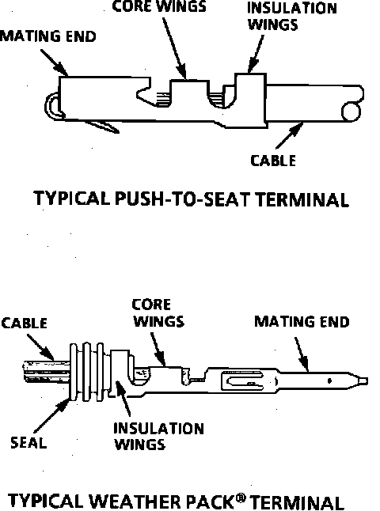

Terminal Repair
Fig. 22 Terminal Repair:

The following repair procedures can be used to repair Push-to-Seat, Pull-to-Seat or Weather Pack(R) terminals, Fig. 22. Some terminals do not require all steps shown. Skip those that don't apply. (Refer to Kent-Moore Terminal Repair Kit J 38125-A for further information.)
1. Cut off terminal between core and insulation crimp (minimize wire loss) and remove seal for Weather Pack(R) terminals.
2. Apply correct seal per gauge size of wire and slide back along wire to enable insulation removal (Weather Pack(R) terminals only).
3. Remove insulation.
4. Align seal with end of cable insulation (Weather Pack(R) terminals only).
5. Position strip (and seal for Weather Pack(R)) in terminal.
6. Hand crimp core wings.
7. Hand crimp insulation wings (non-Weather Pack(R)). Hand crimp insulation wings around seal and cable (Weather Pack(R)).
8. Solder all hand crimped terminals.